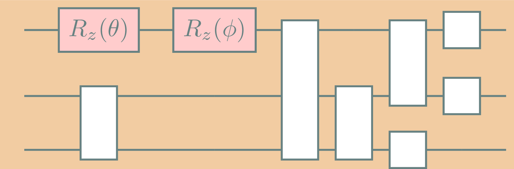

graph TD
style google fill:#F2CCA2,stroke:#82A2A2
style ibm fill:#F2CCA2,stroke:#82A2A2
style quantinuum fill:#F2CCA2,stroke:#82A2A2
style A stroke:#82A2A2,color:black
style B stroke:#82A2A2,color:black
style C stroke:#82A2A2,color:black
style D stroke:#82A2A2,color:black
style E stroke:#82A2A2,color:black
style F stroke:#82A2A2,color:black
style H stroke:#82A2A2,color:black
linkStyle default stroke:#82A2A2,stroke-width:1.5
subgraph google
A(Cirq)
B(Willow)
A -->|cirq.transformers| B
end
subgraph ibm
C(Qiskit)
D(ibmq)
C -->|qiskit.transpiler| D
end
subgraph quantinuum
E(tket)
H(tket2)
F(H2)
E -->|pytket.passes| F
H --> F
end
Unitary Compiler Collection
2025-02-02
The team
What’s in the name?
Unitary- \(\mathsf{U}(n) := \{U \in \mathbb{C}^{n\times n} \mid U\cdot U^\dagger = \mathbb{1}\}\)
Compiler- Translates computer code from one language to another, usually lower-level, language.
Terminology
Somtimes the word transpiler is used when the abtraction level of the input and output are the same.
Collection- A group of objects or works to be seen, studied, or kept together.
What is a quantum compiler?

What does the ecosystem look like?
What does the ecosystem look like?
graph TD
style google fill:#F2CCA2,stroke:#82A2A2
style ibm fill:#F2CCA2,stroke:#82A2A2
style quantinuum fill:#F2CCA2,stroke:#82A2A2
style A stroke:#82A2A2,color:black
style B stroke:#82A2A2,color:black
style C stroke:#82A2A2,color:black
style D stroke:#82A2A2,color:black
style E stroke:#82A2A2,color:black
style F stroke:#82A2A2,color:black
style G stroke:#82A2A2,color:black
style H stroke:#82A2A2,color:black
linkStyle default stroke:#82A2A2,stroke-width:1.5
subgraph google
A(Cirq)
B(Willow)
A -->|cirq.transformers| B
end
subgraph ibm
C(Qiskit)
D(ibmq)
C -->|qiskit.transpiler| D
end
subgraph quantinuum
E(tket)
H(tket2)
F(H2)
E -->|pytket.passes| F
H --> F
end
G(QASM)
G -.-> google
G -.-> ibm
G -.-> quantinuum
What’s so great about (classical) compilers?
A standardized Intermediate Representation (IR)
graph LR
style Frontends fill:#F2CCA2,stroke:#F2CCA2
style Backends fill:#F2CCA2,stroke:#F2CCA2
style A stroke:#82A2A2,color:black
style B stroke:#82A2A2,color:black
style C stroke:#82A2A2,color:black
style D stroke:#82A2A2,color:black
style H stroke:#82A2A2,color:black
style I stroke:#82A2A2,color:black
style J stroke:#82A2A2,color:black
style K stroke:#82A2A2,color:black
linkStyle default stroke:#82A2A2,stroke-width:1.5
classDef largeFont font-size:48px;
class A,B,C,D,H,I,J,K largeFont
subgraph Frontends
A[Clang C/C++]
B[Rust]
C[Swift]
D[Custom]
end
subgraph Backends
direction TB
H[x86]
I[ARM]
J[Wasm]
K[PowerPC]
end
A -->| | H
B -->| | H
C -->| | H
D -->| | H
A -->| | I
B -->| | I
C -->| | I
D -->| | I
A -->| | J
B -->| | J
C -->| | J
D -->| | J
A -->| | K
B -->| | K
C -->| | K
D -->| | K
graph LR
style Frontends fill:#F2CCA2,stroke:#F2CCA2
style Backends fill:#F2CCA2,stroke:#F2CCA2
style A stroke:#82A2A2,color:black
style B stroke:#82A2A2,color:black
style C stroke:#82A2A2,color:black
style D stroke:#82A2A2,color:black
style E stroke:#82A2A2,color:black
style H stroke:#82A2A2,color:black
style I stroke:#82A2A2,color:black
style J stroke:#82A2A2,color:black
style K stroke:#82A2A2,color:black
linkStyle default stroke:#82A2A2,stroke-width:1.5
classDef largeFont font-size:48px;
class A,B,C,D,E,H,I,J,K largeFont
subgraph Frontends
A[Clang C/C++]
B[Rust]
C[Swift]
D[Custom]
end
E[gcc]
subgraph Backends
H[x86]
I[ARM]
J[Wasm]
K[PowerPC]
end
A --> E
B --> E
C --> E
D --> E
E --> H
E --> I
E --> J
E --> K
How can I use ucc?
Can I customize the workflow?
Custom pass:
from qiskit.transpiler.basepasses import TransformationPass
from qiskit.dagcircuit import DAGCircuit
from ucc import UCCDefault1
ucc_compiler = UCCDefault1()
class KAKDecomposition(TransformationPass):
def __init__(self):
super().__init__()
def run(self, dag: DAGCircuit) -> DAGCircuit:
# Your code here
return better_dag
ucc_compiler.pass_manager.append(KAKDecomposition())How does ucc perform?
Get involved!
We want you!
- Test
uccon your workflow - Contribute a new compiler pass
- Add documentation
- Help benchmark
ucc
repo: unitaryfund/ucc docs: ucc.readthedocs.io
Got an idea?
Apply for a microgrant!
Approach:
- $4k no strings attached
- Aimed at explorers in quantum
- Generally open-source, but also community projects
- Usually 3-6 months duration
- Short online applications
Apply @ unitary.foundation/grants
Thank you!